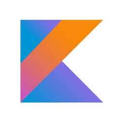
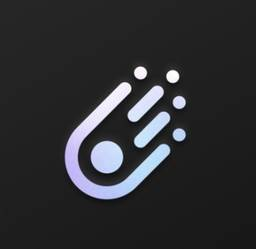

レコチョクのエンジニアブログ
https://techblog.recochoku.jp
最新のIT技術を駆使して音楽関連サービスを展開しています。日々の活動内容から得た知識をお届けする開発ブログです。 We're using the latest IT and we are developing music service.The developers blog which we'll report the knowledge we got from the daily activity contents.
フィード

【Kotlin】初心者がJetpack Composeでチンチロゲームを作ってみる
レコチョクのエンジニアブログ
<p><img width="200" height="200" src="https://techblog.recochoku.jp/wp-content/uploads/2024/03/Kotlin_logo-200x200.png" class="attachment-thumbnail size-thumbnail wp-post-image" alt="" /></p>この記事は<a href="https://qiita.com/advent-calendar/2024/recochoku">レコチョク Advent Calendar 2024</a>の20日目です。株式会社レコチョクのNX開発推進部Androidアプリ開発グループの本多啓路です。今年一番聴いていた曲はMyGO!!!!!さんが歌う<a href="https://www.youtube.com/watch?v=Y9T2H38G88A">ノンブレス・オブリージュ(Cover)</a>で、555分聴いていたらしいです(YouTube Music調べ)。<h1>はじめに</h1>自分はFY24新卒であり、10月から晴れてNX開発推進部Androidアプリ開発グループに配属になりました。そして、OJTもいよいよ終盤となり、Eggsアプリの開発にアサインされることになった今日この頃です。そんな時、レコチョクAdvent Calendar 2024のお話を頂きました。学んできたことを復習できる良い機会だと考え、遊べるアプリを作成してみました。それがこれから紹介する「チンチロアプリ」です！<h1>チンチロについて</h1>まず、「チンチロ」って何？という方も多いと思いますので、ざっくりと説明します。「チンチロ」は日本の伝統的な賭博遊びの一つで、三つのサイコロを使ったゲームです。ルールは、三つのサイコロを丼に目掛けて振り、出た数字の組み合わせによって勝敗が決まる簡単なゲームです。<img src="/wp-content/uploads/2024/12/chinchiro.png" width="25%">使用する出目の組み合わせの役を以下に示しています。<table><thead><tr> <th>役</th> <th>説明</th> <th>例</th></tr></thead><tbody><tr
2分前
AWSでURLリダイレクトを設定する方法
レコチョクのエンジニアブログ
<p><img width="200" height="200" src="https://techblog.recochoku.jp/wp-content/uploads/2018/04/aws_logo-200x200.png" class="attachment-thumbnail size-thumbnail wp-post-image" alt="" /></p>この記事は<a href="https://qiita.com/advent-calendar/2024/recochoku">レコチョク Advent Calendar 2024</a>の19日目の記事となります。<h2>はじめに</h2>こんにちは。次世代プロダクト開発Gで、主にバックエンド領域で業務をしている徐と申します。今年もAdvent Calendar シーズンがやってきました！担当しているサービスのEggs Passは、2020年5月にリリースされて以来、たくさんのユーザーが楽曲を配信しています。Eggs Passでは、楽曲を登録するだけで、Apple Music、Spotify、LINE MUSIC、レコチョクなど、世界中の音楽配信ストアを通じて、楽曲の販売だけでなく、配信や権利収益化なども可能です！<img src="/wp-content/uploads/2024/12/image-20241211101252366.png" alt="image-20241211101252366.png" />今後も、たくさんの機能を追加する予定ですので、ぜひご注目ください。さらに詳しく知りたい方は、以下のリンクをご確認ください。<a href="https://eggspass.jp/distribution/">https://eggspass.jp/distribution/</a><h2>今回のテーマ</h2>直近の業務では、しばらくの間、旧ドメインを新ドメインにURLリダイレクトしたいという要望があり、その設定作業を行いました。また、インフラには主にAWSを利用しているため、今回はAWSでのURLリダイレクト設定方法について共有したいと思います。<h2>内容に関して</h2>本記事は、ある程度AWSの利用経験がある方を対象としています。記事内では、URLリダイレクトを設定する際に
1日前
生成AIを使用したテスト業務の取り組み
レコチョクのエンジニアブログ
<p><img width="200" height="200" src="https://techblog.recochoku.jp/wp-content/uploads/2023/09/3abd1ebbbe921a83754020d2aed3840b-200x200.png" class="attachment-thumbnail size-thumbnail wp-post-image" alt="" /></p>この記事は <a href="https://qiita.com/advent-calendar/2024/recochoku">レコチョク Advent Calendar 2024</a>の18日目の記事です。<h3>はじめに</h3>株式会社レコチョクでQA推進グループをリードしている清崎です。ここ最近は体力の衰えを感じながら、フェスやライブへ足を運んでおります。今年のベストアクトはGREENROOM FESTIVAL '24の<a href="https://greenroom.jp/jungle_24/">Jungle</a>です。ステージはエレクトロ・ファンク、ソウル、ディスコなど多様なジャンルを融合させたスタイルで非日常感を味わいました。本記事では、テスト業務のライフサイクルに沿った生成AIの活用を進める中での事例をご紹介します。現在は初期導入段階でまだ試行を重ねている状況です。<h3>背景</h3><ul><li>チーム内でのスタッフのテスト経験やドメイン知識の違いが、テスト対象の分析や観点の抽出にばらつきが起こっております。特にテストベースに記載されていない観点の導出が困難という課題があります。</li><li>特にリスクの高い部分を見逃したくないため、これを解決する手段として、過去の不具合チケット情報を<a href="https://recochoku.jp/corporate/news/20230807-recochat-with-ai/">RecoChat</a>（生成AI）に学習させて再利用できる仕組みを作成しました。</li></ul><h3>RecoChatとは</h3>レコチョクでは、業務生産性向上の一環として、2023年6月より生成AIの積極的な活用を目的に「with AI プロジェクト」を発足、1カ月後には「Rec
2日前
RecoChat with AI上でプラグイン完成までの奮闘記
レコチョクのエンジニアブログ
<p><img width="200" height="200" src="https://techblog.recochoku.jp/wp-content/uploads/2024/12/icn20-200x200.png" class="attachment-thumbnail size-thumbnail wp-post-image" alt="" /></p>この記事は <a href="https://qiita.com/advent-calendar/2024/recochoku">レコチョク Advent Calendar 2024</a>の17日目の記事となります。<h2>はじめに</h2>こんにちは、レコチョクでシステム領域における契約管理、調達管理、担当業務のDX推進及びAI活用推進を担当している青木と申します。いきなりですが、みなさんは普段音楽ライブに参戦しますか？私は高校生のときにフォークソング部といういわゆる軽音楽部に入部してバンドを組んだことがきっかけで、それまではK-POPをよく聴いていたものの一気に邦楽ロックを聴くようになり、その影響で何度も邦楽ロック関連の音楽ライブに足を運ぶようになりました。ちなみに、私の人生初の音楽ライブは、現在は閉館してしまっておりますが東京・赤坂にあった赤坂BLITZというライブハウスで2014年9月に開催された<a href="https://www.sonymusic.co.jp/artist/scandal/info/443164">SCANDALのライブ</a>です。当時、同じギターを担当していたバンドメンバーと一緒に参戦し、どんな感じで盛り上がればいいんだろう…とソワソワしていたのですが、1曲目からあまりの迫力に気づけば自然と身体が動いていて「ライブって最高だな〜〜」と実感しながら終始楽しんだ日を今でも覚えています。ですが、最近は年々体力が落ちてきたこともあり、昔に比べてライブに参戦する頻度がかなり減ってしまいました…。よし、ライブ行こーっと。<img src="/wp-content/uploads/2024/12/851cb1ed22e627aca95e91f17f9daa30.png" alt="観客のペンライト.png" />さて、本題に入りますが、私は上半期に弊社公式の対話式生成AIチャ
3日前
パイオニアさんと第3回合同勉強会を実施しました！(2024年 12月)
レコチョクのエンジニアブログ
<p><img width="180" height="180" src="https://techblog.recochoku.jp/wp-content/uploads/2016/10/recokuma_full_512-180x180.jpg" class="attachment-thumbnail size-thumbnail wp-post-image" alt="" /></p>こんにちは、Androidアプリ開発グループの我那覇です。今回は先日12/6(金)に行われたパイオニアさんとの合同勉強会についてまとめたいと思います。<h2>合同勉強会</h2>この勉強会は第一回・第二回に続き、レコチョクとパイオニアさんに所属するエンジニア同士でお互いの知見を共有し、交流を深めることを目的とした勉強会として開催しました。第一回、第二回に関してはこちらの記事で紹介していますのでぜひ御覧ください！<blockquote> <a href="https://techblog.recochoku.jp/8994">第一回 合同勉強会 (2023年1月)</a> <a href="http://knowledge.recochoku.co.jp/knowledge/open.knowledge/view/2121?keyword=%E3%83%91%E3%82%A4%E3%82%AA%E3%83%8B%E3%82%A2&tag=&tagNames=&template=&user=&offset=0&group=&groupNames=">第二回 合同勉強会 (2023年7月)</a></blockquote><img src="/wp-content/uploads/2024/12/796BA2E8-9CCF-4C3C-9050-41088219C6B7_1_201_a.jpeg" alt="796BA2E8-9CCF-4C3C-9050-41088219C6B7_1_201_a.jpeg" />今回の勉強会は、アプリエンジニアやアプリ開発、デザインに興味がある方々を対象とし、普段あまり接点がない他社のエンジニアと交流を深める貴重な機会となりました。今年4月に入社した私は、今回が初めての参加となりましたが、勉強会の運
3日前
PerplexityのChrome拡張機能が便利 1
1
レコチョクのエンジニアブログ
<p><img width="200" height="200" src="https://techblog.recochoku.jp/wp-content/uploads/2024/12/Perplexity_400x400-200x200.jpg" class="attachment-thumbnail size-thumbnail wp-post-image" alt="" /></p>この記事は <a href="https://qiita.com/advent-calendar/2024/recochoku">レコチョク Advent Calendar 2024</a> 16日目の記事となります。<h1>はじめに</h1>こんにちは。レコチョクでフロントエンドエンジニアをしている坂本です。最近は寒くなってきたのでROSSOのシャロンを聴いています。冬の夜道を歩きながら聴きたくなる曲です。この記事が公開される頃にはクリスマスも近づいてよりこの曲が映える季節になっていると思うので、ぜひ聴いてみてください。さて、早速本題に移ろうと思うのですが、今回はPerplexity AIのChrome拡張機能が便利だったので紹介してみようと思います。<h1>Perplexityとは</h1>ご存知の方もいるかも知れませんが、まずはPerplexityとはどういうサービスなのか簡単に触れておきます。ということでPerplexity自身に紹介してもらいました。<blockquote> Perplexity AIは、他のAIチャットツールと比較して、以下のような特徴があります： <ol> <li><strong>リアルタイムの情報検索</strong>： Perplexity AIは、最新のウェブ情報をリアルタイムで検索し、最新の情報を提供します。これは、事前に学習されたデータに依存する他のAIチャットボットとは異なります。</p></li> <li><p><strong>ソース引用</strong>： Perplexity AIは、提供する情報の出典を明確に示します。これにより、ユーザーは情報の信頼性を確認できます。</p></li> <li><p><strong>直接的な回答</strong>： Perplexity AIは、ユーザーの質問に対して直接的で簡潔な回答を提供する
4日前
大量のアクセスが来た時にサーバーで何が起きているのか
レコチョクのエンジニアブログ
<p><img width="200" height="200" src="https://techblog.recochoku.jp/wp-content/uploads/2017/09/lanimg_logo-200x200.jpg" class="attachment-thumbnail size-thumbnail wp-post-image" alt="" /></p>この記事は <a href="https://qiita.com/advent-calendar/2024/recochoku">レコチョク Advent Calendar 2024</a> の15日目の記事となります。 こんにちは。システム開発推進部第一Gの望月です。音楽はいろんなジャンルをかじって聞くことが多いのですが、最近はCö shu Nieをよく聴いています！<h2>サーバーが高負荷状態になっているというアラートがあった</h2>サーバーに入れている監視設定により、CPU使用率とロードアベレージが高くなっているアラートがありました。確認したところ、原因は一度に多くのアクセスが来ていたためのようでした。一度に大量のアクセスが来ると負荷が高くなる、というのはなんとなくわかる…。ですが、実際何がどう作用して負荷が高くなるの？というところがわかっておらず、原理のわかっていないアラートに怖いなという気持ちが出てしまったので、大量のアクセスによって高負荷状態になる時にサーバーではどのようなことが起きているか、噛み砕いて確認していきたいと思います。<h2>アクセスが来た時の処理の流れ</h2>まずブラウザからアクセスが来た時の処理の流れは以下のようになります。<ol><li>ドメイン名から取得したIPアドレスに対してサーバーとの接続を確立する</p></li><li><p>接続確立後、HTTPS(またはHTTP)でサーバーへリクエストを送信する</p></li><li><p>サーバーでリクエストを受け取り、リソースを処理する準備をする</p></li><li><p>動的なページである場合、リクエストがWebサーバーからアプリケーションサーバーに渡され、ページの生成が行われる</p></li><li><p>アプリケーションサーバーで実行した結果がWebサーバーを通じてユーザーに送信される</p><
5日前

Galileo AIとVercelでAndroidハンズオンをサクッと用意した話
レコチョクのエンジニアブログ
<p><img width="200" height="200" src="https://techblog.recochoku.jp/wp-content/uploads/2024/12/galileo_ai_logo-200x200.png" class="attachment-thumbnail size-thumbnail wp-post-image" alt="" /></p>この記事はレコチョク <a href="https://qiita.com/advent-calendar/2024/recochoku">Advent Calendar 2024</a> の14日目の記事になります。<h2>自己紹介</h2>こんにちは、株式会社レコチョク NX開発推進部Androidアプリ開発グループの齋藤です。自分は趣味がスノーボードなのですが、昨シーズンは冬らしい寒さにならず、スキー場は雪不足でスノーボードに出かける機会が減ってしまいました。予報では、今シーズンはラニーニャ現象で冬らしい寒さが訪れるそうです！積雪も期待して、スノーボードに出かける機会が増えることを楽しみに過ごしています。<h2>背景</h2>レコチョクでは新卒向けのAndroidアプリ開発学習で、グループ配属後のOJTとしてGoogleコードラボに取り組むカリキュラムを用意しています。Googleコードラボで写経しながら体系的に学べる点は良いですが、中途入社者に対しても同じカリキュラムを実施するか迷いました。スキルスタックがあるエンジニアでしたので、機能要件を伝えて開発するほうが実践に近い形で学習できると考え、テーマを決めて用意したハンズオンを取り組んでもらうことにしました。しかし、これを業務と並行して0から用意するにはなかなか大変そうです。。そこで、最近個人的に気になっていたデザイン系の生成AIであるGalileo AIと、デプロイまでの敷居が低いホスティングサービスであるVercelを利用して、手軽にAndroidアプリ開発のハンズオンを用意できないか試してみることにしました。<h2>ハンズオン作成まで</h2><ol><li>ハンズオンのテーマ決定<ul><li>端末内のメディア再生&APIを利用したメディアDL機能を備えたプレイヤーアプリ開発</li></ul></li><li
6日前
User-Agent Client Hintsについてまとめてみた 1
レコチョクのエンジニアブログ
<p><img width="194" height="194" src="https://techblog.recochoku.jp/wp-content/uploads/2024/12/6fba2531831f3bc4b2a93b7b5dfb424e.png" class="attachment-thumbnail size-thumbnail wp-post-image" alt="" /></p>この記事は <a href="https://qiita.com/advent-calendar/2024/recochoku">レコチョク Advent Calendar 2024</a> の13日目の記事となります。 <h2>はじめに</h2>こんにちは、株式会社レコチョク新卒2年目エンジニアの笹野です。サーバーサイドエンジニアとして、主にdヒッツというサービスに携わっています。今年よく聴いたアーティストランキングTOP3は夢喰NEON、ΛrlequiΩ、なにわ男子でアイドル強めの年でした。今回は、私が最近に少し業務で扱ったUser-Agent Client Hintsについてまとめた記事になります。<h2>User-Agent Client Hintsとは？</h2>GoogleがChrome向けに導入したUser-Agentです。もちろんClient Hintsは従来のUser-Agentと利用目的は同じです。違う点はまるっと文字列で表現していた情報を個別に扱ってやりとりするようにしたところです。昨今ではChrome以外のブラウザでも採用されてきています。また、必要な情報だけを扱うようにしたClient Hintsには下記のような利点があります。<ul><li>不必要な情報をやりとりしないのでプライバシー保護の観点で強化</li><li>情報を個別に扱うことで取得の際に文字列から複雑な正規表現で情報を抽出する必要がない</li></ul><h2>Client HintsでUser-Agentを取得する方法</h2>ということでサーバとブラウザに分けて取得する方法を紹介します。<h3>サーバで利用する場合</h3>リクエストヘッダーに[crayon-6764353a2385f729552509-i/]を追加し、扱いたい項目を許可してヘッダーでやり取りします。<
7日前

【MagicPod】Webとアプリを跨いだ機能の自動UIテスト
レコチョクのエンジニアブログ
<p><img width="200" height="200" src="https://techblog.recochoku.jp/wp-content/uploads/2024/12/logo_symbol-200x200.png" class="attachment-thumbnail size-thumbnail wp-post-image" alt="" /></p>この記事は<a href="https://qiita.com/advent-calendar/2024/recochoku">レコチョク Advent Calendar</a> の12日目です。株式会社レコチョクのNX開発推進部Androidアプリ開発グループの寺島です。最近はハコニワリリィさんの曲をよく聴いてます。とくに<a href="https://youtu.be/FOTN1vKUqus?si=vjr3mAENFSCrZodJ">コガネゾラ</a>という曲が好きです。<h1>はじめに</h1>新しい機能を開発するとき、少なからず既存のコードに変更が生じます。その際、これまで正常に動作していた機能が動かなくなることもあります。この現象をデグレード（以下、デグレ）と呼びます。タイトルにも挙げたMagicPodは、自動でUIテストを実行できるツールです。MagicPodを使うことで、期待のユーザーシナリオ通りの動作をするか確認し、デグレを検知できます。先日、私ははじめてWebサイト（以下Web）と iOS / Android スマートフォン向けアプリ（以下アプリ）が連携する機能のテストをMagicPodで作成しました。今回は、そのナレッジを共有したいと思います。<h1>MagicPodとは？</h1><div style="text-align: center"><img src="/wp-content/uploads/2024/12/MagicPod_Icon.png" /></div>まずはじめに、<a href="https://magicpod.com/">MagicPod</a>の概要を説明します。<blockquote> MagicPodは、モバイルアプリテスト、ブラウザ(ウェブアプリ)テストの両方に対応したAIテスト自動化クラウドサービスです。 豊富な機能と高いメンテナン
8日前